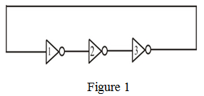

The propagations delay for high to low the output transition is
The propagation delay for low to high the output transition is

Therefore, the total propagation delay for high to low and low to high is and respectively.
Consider the circuit diagram as shown in Figure 1.

Sketch the waveforms for the outputs of the three logic gates as shown below:
In each cycle of the timing diagram the output rises and falls.
The propagating delay of 3 ns and 7 ns for high to low and low to high put transition.
The time period is equal to
The frequency of the Oscillations of the ring is given as
Therefore, the frequency of oscillations is .
The propagations delay for high to low the output transition is
The propagation delay for low to high the output transition is
Therefore, the total propagation delay for high to low and low to high is and respectively.